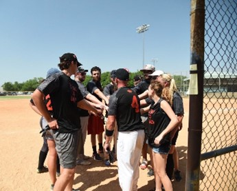
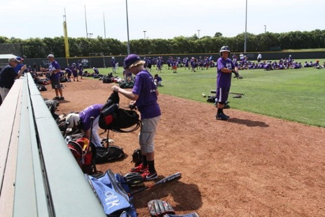

| Job Location | Title | Duration |
|---|---|---|
| Texas Roadhouse | Server | One Year |
| Camp Counseler at TCU | Coach | 3 Months |
| Uber Eats | Driver | 6 Months |
1)Texas Roadhouse what an amazing first job, free delicious rolls anytime I wanted and the people there are super nice and fun to work with. Since I play baseball the owner of the store loved me from the start. I played in two softball fundraiser tournaments with him and other owners/high level employees/ managers etc. I t was a great experience to gain lots of information on how the real world works and what I should and should not do with my time, money, and interests. I think ultimately this shaped me into the man I am today and I have some friendly, terrible at softball millionaires to thank.

2) Jim Schlossnagle’s Baseball camp, I love working with kids and the next generation. I had so many role models growing up and hopefully if I am half as good as they were to me, then I can have an impact on this generation. I did this for a month and some change and got paid serious money to do it, I actually started giving private lessons after this camp because of how much money you can make by using my skills and abilities to teach others the game. I love baseball and at the end of the day baseball will have to be in my career one way or the other. I want to be a coach at the high school or college level, and I am excited for the day to come when I have a player tell me that I’m his favorite coach.

3) UberEats, they say everyone should have to serve someone else to know what it is like to treat people poorly. I had done this before but now virtually though the phone they can track me and say mean and hurtful things because I take too long to get to their house. People are just crazy sometimes and whether it be as simple as tipping an extra dollar at a restaurant or holding the door open for someone else. My life has changed a lot from this job. Every second of everyday counts, and its time I started living life to the fullest. Either make money or better me physically, mentally, or emotionally in one way or another. Time is precious especially when you want McDonald’s late at night…. or from what I have been told.